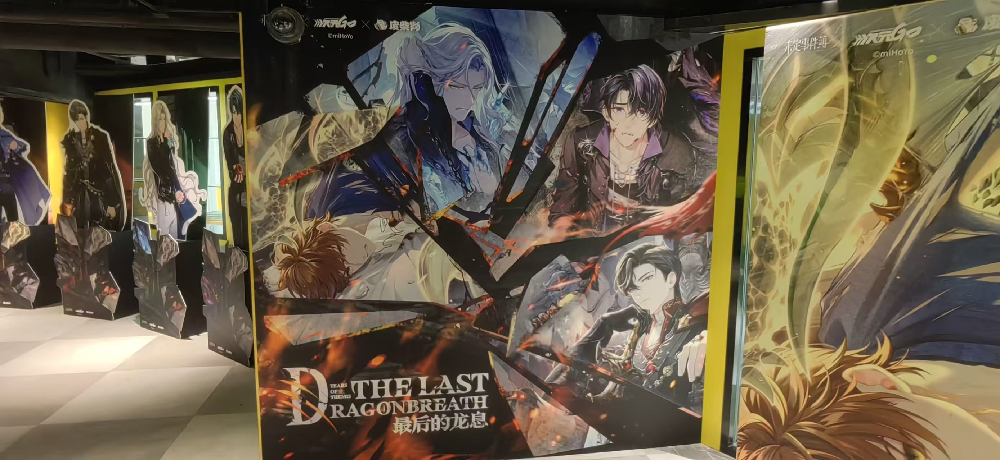
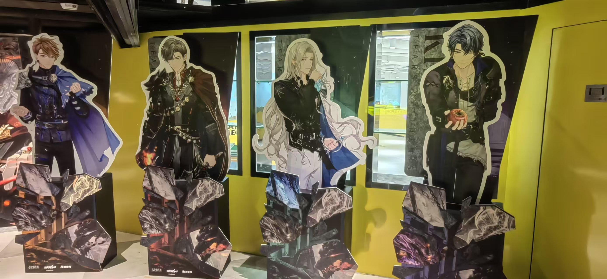
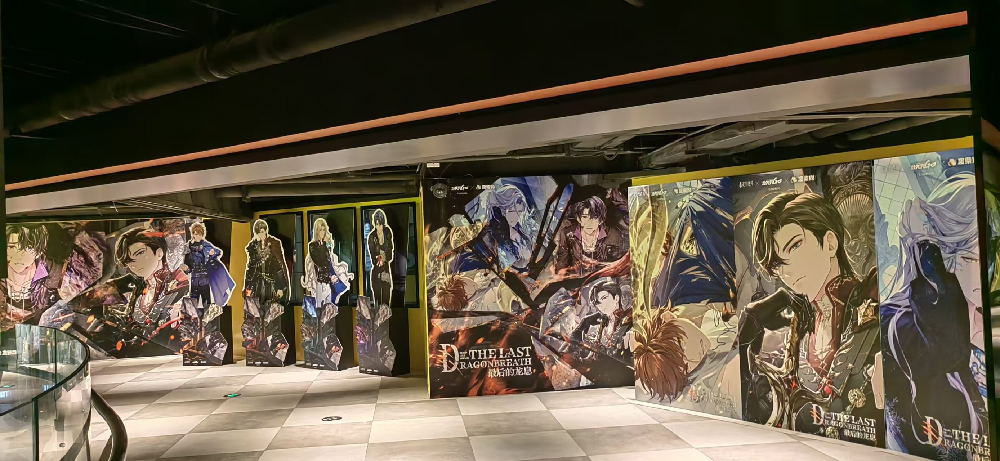
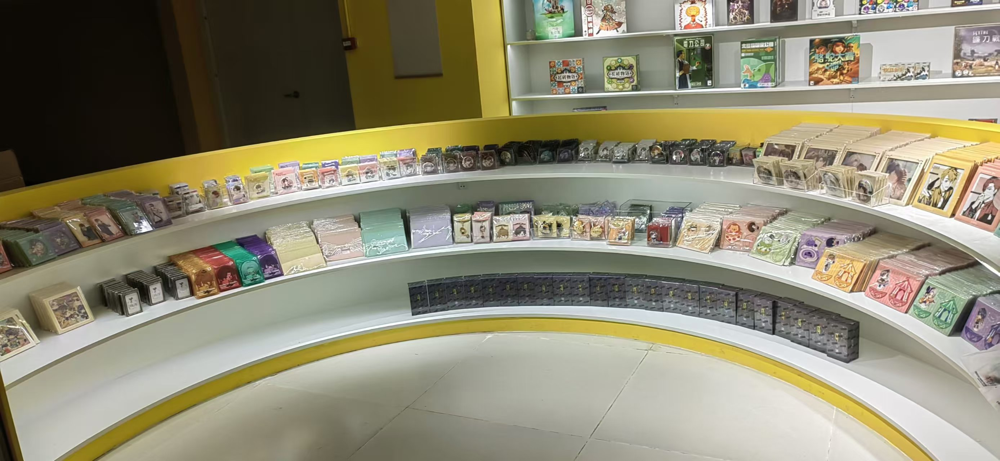
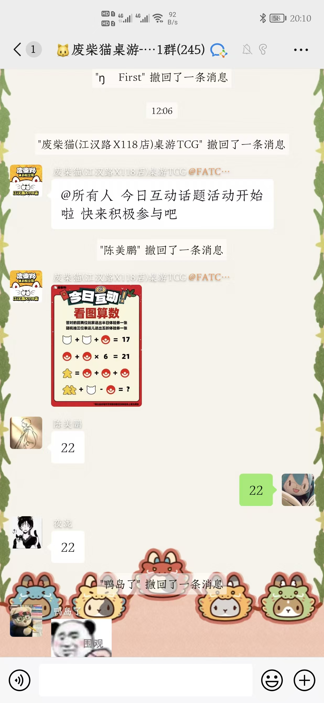

18 天项目周期
2023.09.28—10.15，覆盖国庆假期与主题活动窗口。
《未定事件簿》× 废柴猫桌游概念馆线下联动：从机会识别、内容触达、现场转化，到社群承接的完整活动运营实践。

2023.09.28—10.15，覆盖国庆假期与主题活动窗口。
主动提出联动机会，负责方案、触达、陈列、转化与社群运营；外部合作由上级及总部对接。
用 IP 内容创造到店理由，再把兴趣流量导向联动商品、自有商品与社群。
关注角色内容、限定周边与线下打卡；情感连接和稀缺性驱动付费。
追求社交、娱乐与长时间体验，对新鲜主题活动接受度高。
已有娱乐消费目的，活动视觉和现场氛围可促成二次停留。
女性向内容与商场、门店年轻用户高度重合；用户具备角色周边、限定内容与线下打卡需求。
长停留空间适合合影互动；入口陈列获得自然曝光；桌游、饮品、撸猫等延长体验并带动连带消费。
小红书种草、微信通知、海报曝光。
主题打卡、官方周边、场景互动。
入口陈列、浏览动线、讲解与组合推荐。
问答互动、优惠券、预告、核销与 UGC。

小红书负责兴趣种草，微信社群负责精准通知，门店海报负责自然客流转化；共同强调“线下打卡 + 官方周边 + 城市地点”，降低用户决策成本。


设置轻量问题，参与回答可获得优惠券，形成固定互动预期。
及时发布活动和新品信息，把群内兴趣导向到店行动。
持续介绍桌游玩法，降低新用户理解门槛并建立专业感。
鼓励晒单分享；邀请朋友到店可获得饮品等轻激励。

用主题视觉、活动时间和稀缺周边强化到店理由。
用讲解、爆品陈列和组合推荐促进首次购买。
引导进入社群，用活动与桌游内容持续触达。
通过问答、优惠券、UGC 与老带新提升粘性。